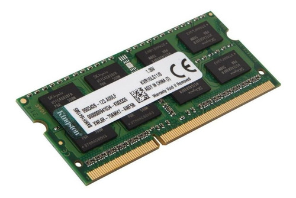

Introdução a Ciência da Computação
Assuntos que mais me interessaram
Memória
A memória é a capacidade de adquirir, armazenar e recuperar informações disponíveis, seja internamente, no cérebro, seja externamente, em dispositivos artificiais. Também é o armazenamento de informações e fatos obtidos através de experiências ouvidas ou vividas. 
As memórias do computador armazenam os dados usados pelo computador, mas cada dispositivo de memória tem objetivos diferentes.
Os fatores de divisão dos dispositivos de armazenamento são:
Considerando os quatro fatores anteriores, as memórias do computador são organizadas em memórias de:
Armazenamento Primário
A função da memória primária é guardas os dados dos programas em execução. Assim, quando o navegador Firefox está executando, os valores de suas variáveis e demais arquivos necessários para o funcionamento, são armazenados na memória RAM. Sem memória RAM, o computador não funciona. A sigla RAM (Random-Acess Memory ou Memória de Acesso Randômico) refere-se ao fato que qualquer dado armazenado na memória RAM, é acessado diretamente e de maneira aleatória, ou seja, fora de ordem. Anteriormente, os dados dos programas eram armazenados em fitas magnéticas, e para acessar um dado no final da fita, era necessário percorrer toda sua extensão até alcançar o dado no final da fita.
Armazenamento Secundário
As memórias do tipo ROM (Read-Only Memory - Memória Apenas Leitura) armazenam dados que não podem ser alterados. Os dados são gravados durante a fabricação do dispositivo. A vantagem das memórias ROM é o baixo custo de produção, além de serem empregadas em situações em que não será necessário, a modificação dos dados gravados, o que ocorre na grande maioria dos eletrodomésticos por exemplo, onde o código e os dados necessários para o funcionamento, são sempre os mesmos.
Existem muitas variações das memórias ROM, como PROM, EPROM e EEPROM. Uma das mais recentes é a Memória Flash, onde os dados são apagados, lidos e escritos eletronicamente. O nome flash se refere a rapidez com que os dados de toda a memória são apagados. No entanto, alteração de apenas alguns bits da memória não são rápidos, pois apenas blocos completos podem ser apagados, e não apenas alguns bits, dessa forma, mudança de um bit significa apagar o bloco e escrever os novos valores. São exemplos de memória Flash o pendrive, cartão de memória, HD SSD, etc.
Armazenamento Interno
A memória cache está presente dentro da CPU e objetiva armazenar os últimos dados utilizados pela CPU. É comum que os dados e instruções de um programa em execução se repitam e sejam executados novamente em pouco tempo. Assim para evitar que a CPU busque dados na lenta memória RAM (lenta em relação a velocidade da CPU), utiliza-se a memória cache, que é mais lenta que os registradores, mas é bem mais rápida que a memória RAM, para armazenas os últimos dados utilizados pela CPU.
Memória Virtual
A memória RAM do computador pode ser insuficiente para armazenar todos os programas em execução. O usuário por abrir tantos programas, que os 8GB de memória RAM não serão capazes de armazenar todos os dados exigidos pelos programas abertos. Assim, para que não exista a impossibilidade do usuário abrir todos os programas necessários para realização de suas atividades, surgiu o conceito de Memória Virtual. A Memória Virtual é uma estruturação dos dados utilizados pelos programas em execução, de forma que o HD do computador possa ser utilizado para armazenar os dados que não podem ser armazenados na memória RAM do computador, por não existir mais espaço na memória RAM.
Esse assunto é interessante, pois leva a pessoa a se aprofundar sobre a funcionalidade de uma memória, desde sua concepção, até sua relevância na composição dos equipamentos e seus diferentes tipos. Esse conteúdo é bastante importante para a vida no meio informatizado.
| Tipo de memória | Categoria | Apagamento | Mecanismo de gravação | Volatilidade |
| Memória de acesso aleatório(RAM) | Memória de leitura-gravação | Elétricamente em nível de byte | Elétricamente | Volátil |
| ROM programável(PROM) | Memória somente de leitura | Não é possível | Elétricamente | Não volátil |
| PROM apagável(EPROM) | Memória principalmente de leitura | Luz UV, em nível de chip | Elétricamente | Não volátil |
| PROM elétricamente apagável(EEPROM) | Memória principalmente de leitura | Elétricamente, em nível de byte | Elétricamente | Não volátil |
| Memória flash | Memória principamente de leitura | Elétricamente em nível de bloco | elétricamente | Não volátil |
Hardware
O hardware é a parte física do computador, ou seja, é o conjunto de componentes eletrônicos e circuitos integrados que se comunicam através de linhas de comunicação (barramento). Assim, de maneira geral o hardware é a parte do computador que pode-se tocar.

Teclado é um exemplo de hardware. O teclado é um dispositivo de entrada de dados (input), ou seja, informações são enviadas para o software através das letras, símbolos e comandos realizados pelo usuário no teclado. Usuário (user) é uma pessoa que utiliza o computador.
Outro exemplo de hardware para entrada de dados é o mouse, que além dos comandos ativados pelos botões, também controla a posição do ponteiro do mouse na tela do computador.
A placa-mãe (motherboard) é um hardware cuja função é conectar e interligar os vários outros hardware do computador.
a uma impressora (printer) é basicamente um dispositivo de saída de dados (output), isto é, um hardware para exibir ao mundo externo dados do computador. A impressora imprimi as informações em papel para visualização dos dados pelo usuário.
Mais um exemplo de hardware é o monitor (computer monitor) que de acordo com o modelo, pode ser de entrada e saída de dados. Monitores que aceitam toques na tela (touch) para execução de comandos, são exemplos de monitores que tanto mostram dados ao usuário, como também são empregados para entrada de dados para o computador.
Esse assunto é fundamental para qualquer tipo de pessoa, pois é importante saber a funcionalidade dos periféricos e de todos os hardwares em si, pois na atualidade, acabamos nos tornando dependente do uso desses componentes, por esse motivo o conteúdo me chamou atenção.